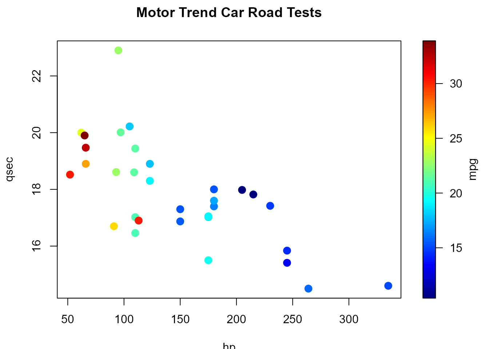

spoints (generic function) draws a scatter plot with points filled with different colors
and (optionally) adds a legend strip with the color scale
(calls splot and plot.default).
Usage
spoints(x, ...)
# Default S3 method
spoints(
x,
y = NULL,
s,
slim = range(s, finite = TRUE),
col = jet.colors(128),
breaks = NULL,
legend = TRUE,
horizontal = FALSE,
legend.shrink = 1,
legend.width = 1.2,
legend.mar = ifelse(horizontal, 3.1, 5.1),
legend.lab = NULL,
bigplot = NULL,
smallplot = NULL,
lab.breaks = NULL,
axis.args = NULL,
legend.args = NULL,
add = FALSE,
reset = TRUE,
pch = 16,
cex = 1.5,
xlab = NULL,
ylab = NULL,
asp = NA,
...
)Arguments
- x
object used to select a method. In the default method, it provides the
xcoordinates for the plot (and optionally theycoordinates; any reasonable way of defining the coordinates is acceptable, see the functionxy.coordsfor details).- ...
additional graphical parameters (to be passed to the main plot function or to
sxxxx.default; e.g.xlim, ylim,...). NOTE: graphical arguments passed here will only have impact on the main plot. To change the graphical defaults for the legend use theparfunction beforehand (e.g.par(cex.lab = 2)to increase colorbar labels).- y
y coordinates. Alternatively, a single argument
xcan be provided.- s
numerical vector containing the values used for coloring the points.
- slim
limits used to set up the color scale.
- col
color table used to set up the color scale (see
imagefor details).- breaks
(optional) numeric vector with the breakpoints for the color scale: must have one more breakpoint than
coland be in increasing order.- legend
logical; if
TRUE(default), the plotting region is splitted into two parts, drawing the main plot in one and the legend with the color scale in the other. IfFALSEonly the (coloured) main plot is drawn and the arguments related to the legend are ignored (splotis not called).- horizontal
logical; if
FALSE(default) legend will appear on the right side. IfTRUEthe legend will be along the bottom.- legend.shrink
amount to shrink the size of legend relative to the full height or width of the plot.
- legend.width
width in characters of the legend strip. Default is 1.2, a little bigger that the width of a character.
- legend.mar
width in characters of legend margin that has the axis. Default is 5.1 for a vertical legend and 3.1 for a horizontal legend.
- legend.lab
label for the axis of the color legend. Default is no label as this is usual evident from the plot title.
- bigplot
plot coordinates for main plot. If not passed, and
legendis TRUE, these will be determined within the function.- smallplot
plot coordinates for legend strip. If not passed, and
legendis TRUE, these will be determined within the function.- lab.breaks
if breaks are supplied these are text string labels to put at each break value. This is intended to label axis on a transformed scale such as logs.
- axis.args
additional arguments for the axis function used to create the legend axis (see
image.plotfor details).- legend.args
arguments for a complete specification of the legend label. This is in the form of list and is just passed to the
mtextfunction. Usually this will not be needed (seeimage.plotfor details).- add
logical; if
TRUEthe scatter plot is just added to the existing plot.- reset
logical; if
FALSEthe plotting region (par("plt")) will not be reset to make it possible to add more features to the plot (e.g. using functions such as points or lines). IfTRUE(default) the plot parameters will be reset to the values before entering the function.- pch
vector of plotting characters or symbols: see
points.- cex
numerical vector giving the amount by which plotting characters and symbols should be scaled relative to the default. This works as a multiple of
par("cex").- xlab
label for the x axis.
- ylab
label for the y axis.
- asp
the y/x aspect ratio, see
plot.window.
Value
Invisibly returns a list with the following 3 components:
- bigplot
plot coordinates of the main plot. These values may be useful for drawing a plot without the legend that is the same size as the plots with legends.
- smallplot
plot coordinates of the secondary plot (legend strip).
- old.par
previous graphical parameters (
par(old.par)will reset plot parameters to the values before entering the function).
Side Effects
If reset = TRUE, the plotting region ([par]("plt"))
may be changed after exiting, to make it possible to add more features to the
plot (setting reset = FALSE prevents this).
See also
splot, simage, spersp,
image, image.plot,
plot.default.
Author
Based on image.plot function from package fields:
fields, Tools for spatial data.
Copyright 2004-2013, Institute for Mathematics Applied Geosciences.
University Corporation for Atmospheric Research.
Modified by Ruben Fernandez-Casal rubenfcasal@gmail.com.
Examples
with( mtcars, spoints(hp, qsec, mpg, main = "Motor Trend Car Road Tests",
xlab = "hp", ylab = "qsec", legend.lab = "mpg"))
